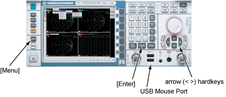
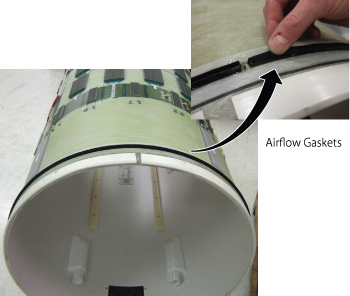

Operating Documentation
Direction 5670006, Rev# 1
Module Version 4.0, Version Date 10/18/11
Operating Documentation |
| ||||
| Strong Magnetic Field! | ||||
| Ferrous materials can become dangerous projectiles in the presence of the magnetic field Produced by the Magnet. | ||||
| Do not Bring any ferromagnetic tools or equipment into the magnet room. |
| Condition | Reference | Effectivity |
|---|---|---|
Body Coil Isolation is done. | - | - |
System must be in scanning condition | - | - |
| ||||
| Electric Hazard !! | ||||
| Please make sure DC Cable is not connected to Bias T. | ||||
Connect Bias T at Port1 and Port2. Do not connect Bias cable at this time.
| NOTE: | Recommend to connect a mouse to one of the USB ports on
the Network Analyzer. If not using the mouse, it is necessary to use hard key. For example, select [Menu] hardkey and then use arrow (<, >) hardkeys to navigate and highlight, and [ENTER] hardkey to select from menu.  |
Power ON Network Analyzer.
From NWA-Setup menu, go to Nwa-Setup -> External Tools -> Calibration.lnk.
Connect N(m) to N(m) Coaxial Cable to Bias T of Port1. Refer to Illustration 5.
Connect female barrel and “BNC female to N male” to the end port 1 cable and hit [Enter] (or click [OK]) when the following message is displayed. Do not make any changes until prompted.
Connect Short to “BNC female to N male” and hit [Enter] (or click [OK]) when the following message is displayed.
Remove Short, connect 50 Ohm load and hit [Enter] (or click [OK]) when the following message is displayed.
Connect port 1 and port 2 cables through female barrel.
Hit [Enter] (or click [OK]) when the following message is displayed. Calibration is complete.
Perform the following sub-steps to set up any Body coil scan on scan window to Setup Driver module BIAS mode.
Dock the Patient Table.
At Magnet Control Panel, press [Alignment Light], [Landmark], and [Advance to Scan] button sequentially.
At the Operator Console, set up any Body coil scan on scan window to setup Driver module BIAS mode. The following steps are example of Body coil scan setup.
Click New Patient Icon.
Enter “geservice” for Patient ID and “111” Lbs for Weight. Then, click [Start Exam] at bottom right.
In the Protocol Selector, Select “Service” from Protocol Library. And, select “snr_check”and “SNR Body Axial, FuncChk:Sys”. Then, Click [>] (right arrow) icon. Protocol is transferred in right field (Multi Protocol Basket).
Click [Accept] for Protocol Selector.
Click [Save Rx] to download body coil scan parameter.
At Magnet Control Panel, press [In] button so that Cradle move to In-limit position.
Unlatch the LPCA from the cradle.
Twist the Cradle Release Handle at the rear of the cradle and pull the cradle out to the home position.
Undock the patient Table.
Remove Bridge Cover, Right Side Center Cover, and Right Side Rear Cover.
Place Body Loader with phantom on to the left-right center of the bridge and push it to the Magnet Center (The front edge of body loader is 990mm (39”) away from the Front edge of the Bridge).
| ||||
| Strong Magnetic Field! | ||||
| network analyzer must remain outside magnet room at all times. | ||||
| Never TAKE network analyzer in magnet room. |
Connect the cables to the network analyzer as following illustration.
Check the operation by following methods.
From NWA-Setup drop-down menu, select External Tools, and select Rough Tuning.lnk.
Check that plots are shown as follows. If not, check bias cables.
Remove one Bias cable at the Network analyzer Bias T(Port1). Confirm that there should be a significant change in the plots for fS11.
Remove the other Bias cable at the Network analyzer Bias T(Port2). Confirm that there should be a significant change in the plots for fS22.
Restore two bias cable to the Network analyzer Bias T (Port1 and Port2).
From NWA-Setup drop-down menu, select External Tools, and select Confirmation Measurement.lnk. Write down fS11, fS22, fS21, and MagS21 values.
Open the following Data Analysis Tool (pdf) and follow instruction in the tool.
This section describes how to adjust fS11, fS22, or fS21 according to the result of Data Analysis Tool so that all of measured value are within specification
From NWA-Setup drop-down menu, select External Tools, and select Rough Tuning.lnk.
Read fS11, fS22, or fS21/MagS21 value as shown in Illustration 19.
Turn VC1, VC2, or VC3 using stick to tune fS11, fS22, or fS21 respectively so that fS11, fS22, fS21 are as close as Target Frequency displayed in Data Analysis Tool.
Once adjustment is completed, go to Confirmation Measurement to confirm fS11, fS22, fS21, and MagS21.
Under the following two conditions, adjustment of dielectric material is needed.
fS11, fS22, or fS21 < 127.6 MHz at the first measurement of S-Parameter measurement.
fS11, fS22, or fS21 > 128.2 MHz at the first measurement of S-Parameter measurement.
VC1, VC2, or VC3 reached the end of rotation and it is navigated to perform “Adjustment by Dielectric Material” by Data Analysis tool.
Perform “End Exam” from pull down menu of scan window (End / End Exam).
| ||||
| Lockout/Tagout for RF Amplifier and PEN Cabinet ust be performed before Body Coil Removal. Refer toLOTO for RF Amplifier and PEN Cabinet. | ||||
Remove Body Coil Refer to RF Body Coil Replacement for Body Coil Removal.
Change Dielectric Material according to the site condition.
| ||||
| Prior to each Body Coil Install, inspect airflow gaskets( 5404530
and 5404530-2). Gaskets should be bonded along entire length. Illustration 24: Airflow Gaskets  | ||||
After changing the dielectric material, install Body Coil by reverse order of removal. Refer to RF Body Coil Replacement.
Verify that LOTO is removed and TPS Reset was done.
Set VC1, VC2, and VC3 to the center of rotation by turning VC to CCW until it reaches the end and then turning VC to CW by 23 turns.
Return to Hardware Setup.
If MagS21 is failed even though other values are within the specification, perform Body Coil Isolation. If failed after Body Coil Isolation and Body Coil Tuning, replace Body Coil.
Perform “End Exam” from pull down menu of scan window (End / End Exam).
Restore Cables, phantom, and enclosure.
Run the TR Dynamic Disable Calibration.
Run the System Gain Calibration.
Run the DD Quadrature Calibration .
Run the Echo Planar Test (EPT).
Perform a quick head and body scan to ensure the system is functioning properly.